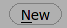
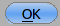
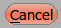
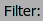
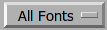
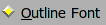
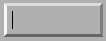
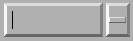
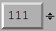
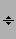

X Resources
Every X application has an inordinate number of resources
that you can tweak. This one is no exception. However I don't
follow standard conventions, so it's all different. Sorry (a
little anyway).
To use an X resource add a series of lines to your
.Xdefaults file and then run "$ xrdb ~/.Xdefaults". For
example:
Gdraw.ScreenWidthInches: 14.7
Gdraw.GGadget.Popup.Font: 10pt helvetica
Gdraw.Background: white
fontforge.FontView.FontFamily: Helvetica, GillSans
Some systems (the mac) will not automatically load X
resources when starting X, in this case you must explicitly
tell fontforge where to find a resource file with the
preference item: File->Preference->Generic->ResourceFile.
You may also use fontforge's resource editor (File->X Resource Editor)
If a resource begins with "Gdraw." or
"fontforge." then the program will look at it.
fontforge.FontView.ChangedColor- Sets the color used to mark changed glyphs.
fontforge.FontView.GlyphInfoColor- Sets the color used to dislpay information about selected
glyph, betwen the FontView menu bar and the glyph array.
fontforge.FontView.SelectedColor- Sets the background color of selected glyphs.
fontforge.FontView.SelectedFgColor- Sets the foreground color of selected glyphs.
fontforge.FontView.EmptySlotFgColor- Sets the color of crosses marking empty code points.
fontforge.FontView.HintingNeededColor- Sets the color of markings for glyphs that need hinting
or instructing.
fontforge.FontView.FontSize- Point size of those fonts.
fontforge.CharView.InfoFamily- A list of font family names to be used in the outline and
bitmap character views for information messages.
fontforge.CharView.PointColor- Sets the color used to draw curved, corner or tangent
points in the outline character view.
fontforge.CharView.FirstPointColor- Sets the color of the first point on a contour.
fontforge.CharView.SelectedPointColor- Sets the color used to draw selected curved, corner or
tangent points in the outline character view.
fontforge.CharView.SelectedPointWidth- Sets the width of the line used to outline selected
curved, corner or tangent points in the outline character
view.
fontforge.CharView.ExtremePointColor- Sets the color of a point which is an extremum.
-
fontforge.CharView.PointOfInflectionColor
- Sets the color of a location which is a point of
inflection.
fontforge.CharView.AlmostHVColor- Sets the color used to mark lines and curves which are
almost, but not quite horizontal or vertical.
fontforge.CharView.NextCPColor- Sets the color used to draw the "Next" control
point.
fontforge.CharView.PrevCPColor- Sets the color used to draw the "Previous" control
point.
fontforge.CharView.SelectedCPColor- Sets the color used to draw a control point that has been
selected.
fontforge.CharView.CoordinateLineColor- Sets the color used to draw the coordinate axes.
fontforge.CharView.WidthColor- Sets the color used to draw the advance width line.
fontforge.CharView.WidthSelColor- Sets the color used to draw the advance width if it is
selected.
fontforge.CharView.GridFitWidthColor- Sets the color used to draw the advance width once it has
been grid fit (if
View->Show Grid Fit is
on)
fontforge.CharView.LigatureCaretColor- Sets the color used to draw ligature caret lines.
fontforge.CharView.RasterColor- Sets the color used to draw the pixels of a rasterized
bitmap (if
View->Show Grid Fit or
Hints->Debug is on)
fontforge.CharView.RasterNewColor- Sets the color used to draw the pixels of a rasterized
bitmap if they have recently been turned on (if
Hints->Debug is on)
fontforge.CharView.RasterOldColor- Sets the color used to draw the pixels of a rasterized
bitmap f they have recently been turned off (if
Hints->Debug is on)
fontforge.CharView.RasterGridColor- Sets the color used to draw the pixel grid used by the
rasterizer (if
View->Show Grid Fit or
Hints->Debug is on)
fontforge.CharView.RasterDarkColor- When doing anti-aliased debugging, sets the color used
for the darkest pixel. Other pixels will be interpolated
between this and the background.
fontforge.CharView.ItalicCoordColor- Sets the color used to draw various horizontal metrics
lines when they have been skewed appropriately for an italic
font.
fontforge.CharView.MetricsLabelColor- Sets the color used to label metrics lines
fontforge.CharView.HintLabelColor- Sets the color used to label hint lines (and blue value
lines)
-
fontforge.CharView.BlueValuesStippledCol
- Sets the color used to draw the BlueValues and OtherBlues
zones.
-
fontforge.CharView.FamilyBlueStippledColor
- Sets the color used to draw the FamilyBlueValues and
FamilyOtherBlues zones.
fontforge.CharView.DHintColor- Sets the color used to draw diagonal hints
fontforge.CharView.HHintColor- Sets the color used to draw horizontal stem hints
fontforge.CharView.VHintColor- Sets the color used to draw vertical stem hints
fontforge.CharView.ConflictHintColor- Sets the color used to draw hints when they conflict
fontforge.CharView.HHintActiveColor- Sets the color used to draw a horizontal stem hint when
it is active in the review hints dlg.
fontforge.CharView.VHintActiveColor- Sets the color used to draw a vertical stem hint when it
is active in the review hints dlg.
fontforge.CharView.HFlexHintColor- Sets the color used to draw the halo around horizontal
flex hints
fontforge.CharView.VFlexHintColor- Sets the color used to draw the halo around vertical flex
hints.
fontforge.CharView.AnchorColor- Sets the color used to draw an anchor point
fontforge.CharView.TemplateOutlineColor- Sets the color used to draw a template outline. (not
currently used)
fontforge.CharView.OldOutlineColor- Sets the color used to draw the original outline of a set
of splines being transformed with one of the transform tools
(flip, rotate, scale, etc.)
fontforge.CharView.TransformOriginColor- Sets the color used to draw the origin of the current
transformation.
fontforge.CharView.GuideOutlineColor- Sets the color used to draw outlines in the Guide
layer.
fontforge.CharView.GridFitOutlineColor- Sets the color used to draw outlines which have been
gridfit (this should probably be the same as
BackgroundOutlineColor as both are in the background
layer).
-
fontforge.CharView.BackgroundOutlineColor
- Sets the color used to draw background outlines.
-
fontforge.CharView.ForegroundOutlineColor
- Sets the color used to draw foreground outlines.
fontforge.CharView.BackgroundImageColor- Sets the color used to draw background images.
fontforge.CharView.FillColor- Sets the color used to draw a character's fill
fontforge.CharView.PreviewFillColor- The color to use when performing a preview fill. If this
is not set then FontForge will fallback to using
fontforge.CharView.FillColor. Neither of these resources are
set then black will be used.
fontforge.CharView.TraceColor- Sets the color used to draw the trace of the freehand
tool.
fontforge.CharView.Rulers.FontSize- Sets the point size of the font used in the rulers and
the info bar. If the font is too big text will be
clipped.
fontforge.CharView.Measure.Font- Select the font used to display the information shown in
the window associated with the measure tool.
fontforge.DebugView.Font- Select the font used to display the truetype instructions
being debugged.
fontforge.DVRaster.Background- Sets the background color of the raster window in the
debugger.
fontforge.MetricsView.AdvanceWidthColor- Sets the color for the grid lines in the metrics view
when nothing special is happening to them.
-
fontforge.MetricsView.ItalicAdvanceColor
- In an italic font, this will be the color used to draw
the line at the italicAngle which corresponds to the italic
advance width.
fontforge.MetricsView.KernLineColor- Sets the color for the grid line in the metrics view
which currently may be moved to change a glyph's
kerning.
-
fontforge.MetricsView.SideBearingLneColor
- Sets the color for the grid line in the metrics view
which currently may be moved to change a glyph's right side
bearing (or bottom side bearing).
-
fontforge.MetricsView.SelectedGlyphColor
- Sets the color for the currently selected glyph in the
metrics view.
fontforge.MetricsView.Font- Select the font used to display labels in the metrics
view.
fontforge.BDFProperties.Font- Sets the font used in the BDF Properties dialog for stand
alone text
fontforge.Combinations.Font- Sets the font used in the kern and anchor combinations
dialog for labelling the combinations
fontforge.CVT.Font- Sets the font used in the 'cvt ' table dialog
fontforge.GlyphInfo.Font- Sets the font used in the glyph info dialog for stand
alone text
fontforge.Groups.Font- Sets the font used in the Groups dialog
fontforge.Histogram.Font- Sets the font used in the Histogram dialog
fontforge.KernClass.Font- Sets the font used in the kern class and pair
dialogs
fontforge.LayersPalette.Font- Sets the font used in the layers palettes dialog
fontforge.Math.Font- Sets the font used in the Math dialog
fontforge.Math.BoldFont- Sets the bold font used in the Math dialog
fontforge.OFLib.Font- Sets the font used in the Open Font Library browser
dialog
fontforge.SearchView.Font- Sets the font used in the find and replace dialog
fontforge.SearchView.BoldFont- Sets the bold font used in the find and replace
dialog
fontforge.SFTextArea.Font- Sets the font used in the Print dialog and its variants
dialog -- except I don't think this ever gets used.
fontforge.ShowATT.Font- Sets the font used in the Show ATT dialog
fontforge.ShowATT.MonoFont- Sets the monospaced font used in the Show ATT dialog
fontforge.Splash.Font- Sets the font used in the splash screen and About
FontForge dialog.
fontforge.Splash.ItalicFont- Sets the italic font used in the About FontForge
dialog
fontforge.StateMachine.Font- Sets the font used in the Apple state machine dialog
fontforge.TilePath.Font- Sets the font used in the Tile Path dialog
fontforge.TilePath.BoldFont- Sets the bold font used in the Tile Path dialog
fontforge.ToolsPalette.Font- Sets the font used in the Tools Palette dialog for
labelling tool options
fontforge.TTInstruction.Font- Sets the font used in the various dialogs which edit
truetype instructions ('fpgm' table, glyph instructions,
etc.)
fontforge.Validate.Font- Sets the font used in the Validate dialog
fontforge.View.Background- Sets the background color for the drawing areas of the
fontview, glyph view, bitmap view and metrics view.
fontforge.Warnings.Font- Sets the font used in the Warnings dialog
Gdraw.ScreenWidthCentimeters- A double. (centimeters)
X usually does not know the physical width of a screen (it
knows the logical, pixel width). Gdraw's internals are based
on points rather than pixels, and it will sometimes pick a
font that is too small or too large if it relies on X's idea
of how wide the screen is.
Gdraw.ScreenWidthInches- A double. (inches)
Same as the above, except measured in inches.
Gdraw.ScreenWidthPixels- An integer (pixels)
When X creates a virtual screen it may not be possible for
Gdraw to find the actual number of pixels on the screen. This
again will throw off point calculations.
Gdraw.ScreenHeightPixels- An integer (pixels)
When X creates a virtual screen it may not be possible for
Gdraw to find the actual number of pixels on the screen. This
is not used in point calculations.
Gdraw.Depth- An integer (1, 8, 16, 32)
You can use this to request a different depth than the
default one. Not all servers will support all depths. If
FontForge can't find a visual with the desired depth it will
use the default depth.
Gdraw.VisualClass- A string ("StaticGray", "GrayScale", "StaticColor",
"PsuedoColor", "TrueColor", "DirectColor")
FontForge will search for a visual with the given class (and
possibly depth if the depth argument is specified too).
Gdraw.Colormap-
An string ("Current", "Copy", "Private")
You can use this to control what FontForge does about the
colormap on an 8bit screen
- Current -- FontForge will attempt to allocate its
colors in the current colormap.
- Copy -- FontForge will allocate what colors it can
and then copy the current color map into a private copy.
This means FontForge has access to a much wider range of
colors, and (as long as the shared colormap doesn't
change) FontForge's colormap will match that of the rest
of the screen.
- Private -- FontForge will allocate a private colormap
and set the colors just as it wants them. It will almost
certainly not match the shared colormap.
Gdraw.DoDithering- An integer (0 or 1)
You can use this to turn off dithering of images on an 8bit
screen.
Gdraw.MultiClickTime- An integer (milliseconds)
The maximum amount of time allowed between two clicks for
them to be considered a double (triple, etc.) click.
Gdraw.MultiClickWiggle- An integer (pixels)
The maximum number of pixels the mouse is allowed to move
between two clicks and have them still be considered a double
click.
Gdraw.TwoButtonFixup- A boolean
On a windows keyboard use the modifier key with the flag on
it to simulate mouse button 2 (middle button). If this key is
depressed when a mouse button is pressed or released then
pretend it was button 2 that was pressed or release.
Gdraw.DontOpenXDevices- a boolean
- Various people have complained that when FontForge
attempts to open the devices of the wacom graphics tablet,
the X server gives a BadDevice error. I can't duplicate this,
the open works fine on my system, but this resource allows
them to tell fontforge not to try to use the tablet.
Gdraw.MacOSXCmd- A boolean
On Mac OS X the user will probably expect to use the Command
(apple, cloverleaf) key to control the menu (rather than the
Control key). If this is set then the command key will be
mapped to the control key internally.
Gdraw.MultiClickWiggle- An integer (pixels)
The maximum number of pixels the mouse is allowed to move
between two clicks and have them still be considered a double
click.
Gdraw.Keyboard-
ibm | mac | sun | ppc | 0 | 1 | 2 | 3
Allows you to specify the type of keyboard. Currently this
is only relevent when generating menus. The modifier keys
are in different locations on different keyboards (under
different operating systems) and if FontForge knows what
keyboard you are using it can make the hot-keys have better
labels.
- ibm | 0
Uses the Control and Alt keys
- mac | 1
Uses the Command and Option keys (Mac OS/X, Mac
keyboard)
- ppc | 3
Uses the Control and Command keys (Suse ppc linux, Mac
keyboard)
- sun | 2
Uses the Control and Meta keys
Gdraw.SelectionNotifyTimeout- An integer (seconds)
Gdraw will wait this many seconds after making a request for
a selection (ie. when doing a Paste). If it gets no responce
after that period it reports a failure.
Gdraw.Background- A color
Gdraw will use this as the default background color for the
windows.
Gdraw.Foreground- A color
Gdraw will use this as the default foreground color for
dialogs.
Gdraw.GGadget.Popup.Foreground- A color
Specifies the foreground color of popup (tooltip)
messages.
Gdraw.GGadget.Popup.Background- A color
Specifies the background color of popup messages.
Gdraw.GGadget.Popup.Delay- An integer (milliseconds).
Specifies the amount of time the cursor must remain
motionless before a popup message pops up.
Gdraw.GGadget.Popup.LifeTime- An integer (milliseconds).
Specifies the length of time the message will display.
Gdraw.GGadget.Popup.Font- A font
Specifies the font to use in a popup message.
Gdraw.GGadget.Progress.FillCol- A color
Specifies the color of the progress bar in the progress
window.
Gdraw.GGadget.Progress.Background- A color
Specifies the background color of progress window.
Gdraw.GGadget.Progress.Font- A font
Specifies the font to use in a progress window.
Gdraw.GGadget.ImagePath- A unix style path string, with directories separated by
":". The sequence "~/" at the start of a directory will be
interpreted as the user's home directory. If a directory is
"=" then the installed pixmap directory will be used.
Specifies the search path for images. Specifically those used
in the menus, and those used in various gadgets listed
below.
Gdraw.GGadget...-
Every ggadget in enclosed in a box. No gadget is actually a
GGadget, but every other gadget inherits (potentially with
modification) from this abstract class. The following
information may be supplied for any box:
...Box.BorderType- one of "none", "box", "raised", "lowered",
"engraved", "embossed", "double"
For a description of these see the css manual.
...Box.BorderShape- one of "rect", "roundrect", "ellipse",
"diamond"
Describes the basic shape of the box. (some ggadgets must
be in rectangles).
...Box.BorderWidth- An integer (points)
Specifies the width of the box's border in points (NOT
pixels)
...Box.Padding- An integer (points)
Specifies the padding between the interior of the box and
the border
...Box.Radius- An integer (points)
Specifies the radius of a roundrect. Ignored for
everything else.
...Box.BorderInner- A boolean (true, on or 1, false, off or 0)
Specifies whether a line should be drawn inside the
border.
...Box.BorderInnerCol- A color
Specifies a color of line that should be drawn inside a
border.
...Box.BorderOuter- A boolean (true, on or 1, false, off or 0)
Specifies whether a black line should be drawn outside
the border.
...Box.BorderOuterCol- A color
Specifies a color of line that should be drawn outside a
border.
...Box.ActiveInner- A boolean (true, on or 1, false, off or 0)
Specifies whether a yellow line should be drawn inside
the border when the gadget is active (not all gadgets
support this).
...Box.DoDepressedBackground- A boolean (true, on or 1, false, off or 0)
Changes the color of the background while a button is
depressed.
...Box.GradientBG- A boolean (true, on or 1, false, off or 0)
Draws a gradient from GradientStartCol (at top and bottom
edge) to Background (in the center).
...Box.BorderBrightest- A color
The color of the brightest edge of the border (usually
the left edge)
...Box.BorderBrighter- A color
The color of the next to brightest edge of the border
(usually the top edge)
...Box.BorderDarkest- A color
The color of the darkest edge of the border (usually the
right edge)
...Box.BorderDarker- A color
The color of the next to next to darkest edge of the
border. (usually the bottom edge)
...Box.NormalBackground- A color
The color of a normal background (not disabled, not
depressed)
...Box.NormalForeground- A color
The color of a normal foreground (not disabled)
...Box.DisabledBackground- A color
The color of a disabled background .
...Box.DisabledForeground- A color
The color of a normal foreground.
...Box.ActiveBorder- A color
The color of an ActiveInner border.
...Box.PressedBackground- A color
The color of a depressed background.
...Box.GradientStartCol- A color
Only meaningful if GradientBG is set. Draws a gradient of
colors for the background with this color as the start
point at the top and bottom edges of the gadget, and
Background as the end point in the center of it.
...Font- A font
Specifies the default font for a ggadget.
Gdraw.GButton...
Gdraw.GDefaultButton... Inherits from GButton
Gdraw.GCancelButton... Inherits from GButton
Gdraw.GLabel...
Gdraw.GDropList...
Gdraw.GListMark... controls the shape of the mark used to show the
menu of a combo box.
Gdraw.GRadio... affects the text of the radio
GDraw.GRadioOn... -- affects the shape used (above, the
diamond to the left of the text) of an on radio button
GDraw.GRadioOff... -- affects the shape used of an off radio
button
Gdraw.GCheckBox...
GDraw.GCheckBoxOn...
GDraw.GCheckBoxOff...
Gdraw.GTextField...
Gdraw.GComboBox... Inherits from GTextField
Gdraw.GComboBoxMenu... Inherits from GComboBox (This is the box drawn
around the GListMark in a ComboBox)
Gdraw.GNumericField...  Inherits from GTextField
Gdraw.GNumericFieldSpinner...  Inherits
from GNumericField
Gdraw.GList...
Gdraw.GScrollBar...
Gdraw.GScrollBarThumb...
Gdraw.GGroup... -- a frame around groups of gadgets.
Gdraw.GLine...
Gdraw.GMenu...
Gdraw.GMenuBar...
Gdraw.GTabSet...
Gdraw.GVTabSet...- As above.
Specifies the box, font, color, etc. for this particular type
of ggadget.
Gdraw.GHVBox- A group of gadgets that sits inside
GGroup
and supports graceful reflow of window contents in event of
resizing. Modelled after GTK boxes. It's supposed to be
invisible, but interface developers might actually want to
style it.
Gdraw.GScrollBar.Width- An integer (points)
Specifies the scrollbar width in points (for horizontal
scrollbars it specifies the height)
Gdraw.GListMark.Width- An integer (points)
Specifies the width for the little mark at the end of
comboboxes and drop lists.
Gdraw.GListMark.Image- A filename of an image file
Will be used instead of GListMark.Box if present. This is
either a fully qualified pathname, or the filename of an
image in the pixmap directory.
Gdraw.GListMark.DisabledImage- A filename of an image file
Will be used instead of GListMark.Box for disabled
(non-clickable) instances, if present. This is either a fully
qualified pathname, or the filename of an image in the pixmap
directory.
Gdraw.GMenu.Grab- A boolean
Controls whether menus do pointer grabs. Debugging is easier
if they don't. Default is for them to do grabs.
Gdraw.GMenu.MacIcons-
A boolean
Controls whether menus show shortcuts as the standard mac
icons (cloverleaf for Command key, up arrow for shift, ^
for control and wierd squiggle for Option(Meta/Alt)) or as
text ("Cnt-Shft-A"). Default is True on the mac and False
elsewhere.
Gdraw.GRadioOn.Image- A filename of an image file.
Used for drawing the "On" state of a radio button. (This is
drawn within the GRadioOn box, if you intend the
image to be the entire radio marker you should probably make
the GRadioOn box be a blank rectangle). This is
either a fully qualified pathname, or the filename of an
image in the pixmap directory.
Gdraw.GRadioOn.DisabledImage- A filename of an image file.
Used for drawing the "On" state of a disabled (non-clickable)
radio button. (This is drawn within the GRadioOn
box, if you intend the image to be the entire radio marker
you should probably make the GRadioOn box be a
blank rectangle). This is either a fully qualified pathname,
or the filename of an image in the pixmap directory.
Gdraw.GRadioOff.Image- A filename of an image file.
Used for drawing the "Off" state of a radio button. (This is
drawn within the GRadioOff box, if you intend
the image to be the full radio marker you should probably
make the GRadioOff box be a blank rectangle).
This is either a fully qualified pathname, or the filename of
an image in the pixmap directory.
Gdraw.GRadioOff.DisabledImage- A filename of an image file.
Used for drawing the "Off" state of a disabled
(non-clickable) radio button. (This is drawn within the
GRadioOff box, if you intend the image to be the
full radio marker you should probably make the
GRadioOff box be a blank rectangle). This is
either a fully qualified pathname, or the filename of an
image in the pixmap directory.
Gdraw.GCheckBoxOn.Image- A filename of an image file.
Used for drawing the "On" state of a check box button. (This
is drawn within the GCheckBoxOn box, if you
intend the image to be the complete check box marker you
should probably make the GCheckBoxOn box be a
blank rectangle). This is either a fully qualified pathname,
or the filename of an image in the pixmap directory.
Gdraw.GCheckBoxOn.DisabledImage- A filename of an image file.
Used for drawing the "On" state of a disabled (non-clickable)
check box button. (This is drawn within the
GCheckBoxOn box, if you intend the image to be
the complete check box marker you should probably make the
GCheckBoxOn box be a blank rectangle). This is
either a fully qualified pathname, or the filename of an
image in the pixmap directory.
Gdraw.GCheckBoxOff.Image- A filename of an image file.
Used for drawing the "Off" state of a check box button. (This
is drawn within the GCheckBoxOff box, if you
intend the image to be the sole check box marker you should
probably make the GCheckBoxOff box be a blank
rectangle). This is either a fully qualified pathname, or the
filename of an image in the pixmap directory.
Gdraw.GCheckBoxOff.DisabledImage- A filename of an image file.
Used for drawing the "Off" state of a disabled
)non-clickable) check box button. (This is drawn within the
GCheckBoxOff box, if you intend the image to be
the sole check box marker you should probably make the
GCheckBoxOff box be a blank rectangle). This is
either a fully qualified pathname, or the filename of an
image in the pixmap directory.
Gdraw.GMatrixEdit.TitleFont- A font.
The font used to draw titles in a GMatrixEdit. By default
this is smaller and bolder than the font used for text in the
matrix edit.
Gdraw.GMatrixEdit.TitleBG- A color.
Background color used for the titles of a matrix edit.
Gdraw.GMatrixEdit.TitleFG- A color.
Foreground color used to draw the text of the titles of a
matrix edit.
Gdraw.GMatrixEdit.TitleDivider- A color.
Color used to draw the divider lines in the titles of a
matrix edit.
Gdraw.GMatrixEdit.RuleCol- A color.
Used to draw the horizontal and vertical lines in the body of
a matrix edit.
Gdraw.GMatrixEdit.FrozenCol- A color.
Used to draw text in a cell which is frozen (cannot but
updated by the user)
Gdraw.GMatrixEdit.ActiveCol- A color.
Used to draw text in the cell which is active (and used for
the "<New>" entry).
- ...
- Deprecated
-
The following resources are deprecated and will be silently
ignored.
fontforge.FontView.FontFamilyfontforge.FontView.SerifFamilyfontforge.FontView.ScriptFamilyfontforge.FontView.FrakturFamily-
fontforge.FontView.DoubleStruckFamily
fontforge.FontView.SansFamilyfontforge.FontView.MonoFamilyfontforge.CharView.MDHintColorGdraw.GHVGroupBox
- Colors
-
Colors may be specified as:
- rgb(r,g,b)
where r,g and b are doubles between 0 and 1.0
- argb(a,r,g,b)
where a,r,g, and b are doubles between 0 and 1.0
(The alpha channel is only supported in windows with
cairo -- that is the glyph view. Alpha 1.0 is fully
opaque, alpha 0.0 should be fully transparent, values in
between are translucent. Since drawing something fully
transparent has no effect, FontForge treats transparent
spot colors as fully opaque).
- rgb(r%,g%,b%)
where r, g, and b are doubles between 0% and 100%
- hsv(h,s,v)
A color expressed as hue (between 0 and 360), saturation
(0.0 and 1.0) and value (0.0 and 1.0)
- hsl(h,s,l)
A color expressed as hue (between 0 and 360), saturation
(0.0 and 1.0) and luminosity (0.0 and 1.0)
- r g b
where r, g, and b are decimal integers between 0 and
255
- #rgb
where r, g, and b are hex digits between 0 and 15
(0xf)
- #rrggbb
where rr, gg, bb are hex numbers between 0x00 and
0xff
- #aarrggbb
where aa, rr, gg, bb are hex numbers between 0x00 and
0xff
(The alpha channel is only supported in cairo windows. If
alpha is 0, then fontforge will treat the color as opaque
because drawing a completely transparent spot color does
nothing).
- #rrrrggggbbbb
where rrrr, gggg, bbbb are hex numbers between 0x0000 and
0xffff
- or one of the color names accepted on the net (red,
green, blue, cyan, magenta, yellow, white, black, maroon,
olive, navy, purple, lime, aqua, teal, fuchsia,
silver)
- Fonts
-
A font may be specified as:
<boldness> <italicness> <pointsize>
<familyname>
(I know the order looks a bit weird but that's what is used
by css).
- <boldness> can be:
- nothing -- the font is not bold
- bold -- the font is bold
- a number -- (between 0 and 999), a numeric value
that gives some idea of how bold the font should be.
200 would be a light font, 400 an normal font, 700 a
bold font and 999 and ultra-black font.
- <italicness> can be:
- nothing -- the font is not italic
- italic -- the font is italic
- oblique -- the font is oblique (italic)
- <pointsize> can be:
- nothing -- a default point size is chosen
- a number followed by "pt" -- specifies the point
size.
Examples
- bold 14pt helvetica
Helvetica Bold at 14 points
- italic 10pt times
Times italic at 10 points
FontForge assumes that your keyboard has a control key and
some equivalent of a meta key. FontForge works best with a
three button mouse.
Almost all keyboards now-a-days will have the needed
modifier keys, but which key is used for what will depend on
the keyboard and the OS (for instance XDarwin and suse linux
use quite different mappings for the modifier keys on the mac
keyboard). Usually this is only relevant for menus (and
mnemonics). FontForge tries to guess the keyboard from the
environment in which it was compiled. But with X this may not
always be appropriate. So the "Gdraw.Keyboard" resource above may be
used to change this. (Currently this setting only control the
labels that appear in menus for the hotkeys).
Mice are more problematic. On PCs we usually have two button
mice and on mac single button mice. Many linuxes that run on a
PC will give you an option of simulating the middle button of
the mouse by depressing the left and right buttons
simultaneously. FontForge will also allow you to simulate it by
holding down the super key (usually this is the one with the
picture of a windows flag on it) while depressing either mouse
button.
On the mac I don't see any good way of simulating a three
button mouse...
-- Prev --
TOC -- Next --